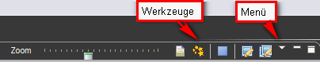

Sichtfenster
Sichtfenster zeigen verschiedene Aspekte des gesamten Katalogs oder einzelner Bilder oder Bildgrruppen.
Sichtfenster verfügen über eigene Menüs.
Klicken
Sie auf das Dreieckssymbol in der Titelleiste des Sichtfensters, um das
Menü zu öffnen. Einige Sichtfenster verfügen außerdem über
eigene Werkzeuge auf der Titelleiste. Diese Werkzeuge wirken nur auf
die Elemente des Sichtfensters.

Ein Sichtfenster
kann innerhalb der Werkbank als eigenständiges Fenster angezeigt werden
oder aber mit anderen Sichtfenstern in einem Pultordner angeordnet
werden. Sie können die aktuelle Perspektive jederzeit abändern, indem
Sie Sichtfenster öffnen oder schließen oder an einen anderen Ort ziehen
und dort andocken.
Sichtfenster öffnen
Perspektiven
bieten vordefinierte Kombinationen von Sichtfenstern. Um ein
Sichtfenster zu öffnen, das nicht in der aktuellen Perspektive
enthalten ist, rufen Sie Fenster
> Sicht anzeigen aus der Hauptmenüleiste.
Verschieben
und Andocken von Sichtfenstern
Um
den Erscheinungsort eines Sichtfensters in der aktuellen Perspektive zu ändern:
- Ziehen
Sie das Sichtfenster von der Titelleiste aus. Lassen
Sie die linke Maustaste noch nicht los.
- Während
Sie die Ansicht in der Workbench bewegen, sehen Sie, wie sich der
Mauszeiger ändert und die Wirkung der Operation symbolisiert. Um zu
sehen, wie sich der Drop-Cursor ändert, ziehen Sie das Sichtfenster über den linken,
rechten, oberen oder unteren Rand eines anderen Sichtfensters. Sie
können das SichtfensterSichtfenster zu verwandeln, das selbstständing auf dem Desktop residiert.
- Sichtfenster in der Position ist, die Sie möchten, lassen Sie die linke
Maustaste los.
- Beachten
Sie, dass Sie eine ganze Gruppe von gestapelten Sichtfenstern an
eine andere Position ziehen können, indem Sie an der leeren
Stelle rechts neben den Registerkarten "anfassen".
Mit mehreren Fenstern arbeiten
Views können auch auf eine Position außerhalb der Workbench gezogen
werden. In diesem Fall entsteht ein neues Anwendungsfenster auf dem
Desktop, welches diesen View enthält. Um zum ursprünglichen Layout
zurückzukehren, ziehen Sie einfach den View wieder zurück an seine
anfängliche Position.
Erstellen
von Schnellsichten
Sichtfenster, die schnell geöffnet und
geschlossen werden können. Sie
arbeiten wie andere Sichtfenster, außer dass sie keinen Platz in der Werkbank einnehmen.
So
erstellen Sie eine Schnellsicht: Führen Sie einen Rechtsklick auf
den Reiter des Sichtfensters und aktivieren Sie die Option Schnellsicht.
Das
Symbol einer Schnellsicht erscheint auf der Schnellsichtleiste
(unten links in der Statusleiste). Sie
können die Schnellsicht anzeigen, indem Sie auf das entsprechende Symbol klicken. Sobald
Sie außerhalb des Sichtfensters klicken, wird es wieder
ausgeblendet.

Um das Sichtfenster an seinem ursprünglichen Erscheinungsort wieder herzustellen (und von der Schnellsichtleiste zu entfernen), betätigen Sie das Schnellsicht-Element im Kontext-Menü des Schnellsicht-Symbols in der Schnellsichtleiste.
Maximieren
und Minimieren von Sichtfenstern
Sichtfenstern), können vergrößert oder verkleinert werden.
Es
gibt eine Vielzahl von Möglichkeiten, um dies zu erreichen:
- Doppelklicken
Sie den Reiter eines Sichtfensters, um seinen Pultordner zu maximieren. Ein
weiterer Doppelklick wird seine ursprüngliche Größe und Position
wiederhergestellen.
- Verwenden
Sie die Schaltflächen Minimieren
und Maximieren auf der rechten Seite der Titelleiste des Pultordners.
- Verwenden
Sie die Funktionen Minimieren
oder Maximieren im Kontextmenü des Pultordners (rechter Mausklick auf den freien Bereich neben den Reitern).
Wenn
ein Sichtfenster-Pultordner minimiert ist, erscheint er als eine Sammlung von Symbolen im Randbereich der Werkbank in der Nähe der ursprünglichen Pultordnerposition. Mit
einem Klick auf die Schaltfläche
Wiederherstellen in diesem Bereich
können Sie den Pultordner in seiner Orignialgröße und an seiner Originalposition
wiederherstellen.
Beachten Sie: Sie
können immer dem Anfangszustand der aktuellen Perspektive mit Hilfe der Menüfunktion
Fenster>Perspektive zurücksetzen... wiederherstellen.
Änderungen speichern
Nach
dem Hinzufügen oder Neuanordnen von können Sie das neue Layout durch Aufruf der Menüfunktion  Fenster>Perspektive speichern als... unter neuem Namen als Perspektive abspeichern.
Fenster>Perspektive speichern als... unter neuem Namen als Perspektive abspeichern.